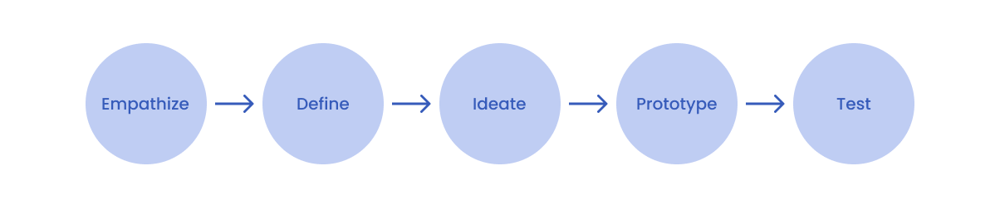

Team
Solo Project
My Role
UX Researcher
UX / UI Designer
Tools
Figma
Photoshop
Illustrator
Timeline
4 weeks
OVERVIEW
Concept
I did this project as a passion project over a span of 4 weeks during Summer 2022. The purpose of the project was to develop a cleaning app that would help individuals build cleaning habits and to further develop my UX / UI skills.
Problem
A major problem many individuals face with cleaning their house is building a habit out of it , lacking motivation, and letting all of their chores pile up, resulting in the need for marathon cleaning.
Solution
An app that utilises timed cleaning, progress recording and gamification, where users are able to reward themselves for consistently accomplishing their cleaning tasks.

Create schedules
• Choose the area and task.
• Choose a time and how long you will clean for.
• Repeat the task however many times you need.
Reward yourself
• Choose what you will reward yourself with once you reach milestones.
• Level up and reward yourself at 25XP, 50XP, 75XP and 100XP milestones!
Complete tasks & gain points
• Start the timer and clean.
• Take before and after pictures to view your progress.
• Receive points when the timer is up
Record progress
• Record your progress with before and after pictures.
• Look back at your progress for motivation.
DESIGN PROCESS
Design thinking framework
I followed the design thinking process to better understand the problem and the challenges users may be facing. My process was not linear and I revisited the stages throughout the process.
EMPATHIZE
Secondary research
I conducted secondary research and discovered several insights:
1. Individuals avoid cleaning because of the lack of time.
2. Individuals like to admire their work after cleaning and feel satisfied.
3. Individuals are more likely to successfully stick to a habit when the task is planned and progress is recorded.
User Interviews
I conducted several interviews to better understand my users and what discourages / motivates them.
Interview Questions:
1. Tell me about the last time that you successfully built a habit. How did you motivate yourself, and what difficulties did you face?
2. How often do you clean?
3. What motivates you to start cleaning
4. When do you prefer to clean and why?
5. Tell me about the last time you cleaned, how did you feel before, during and after?
6. Tell me about the last time you tried to make a habit of cleaning regularly? What were your motivations? What difficulties did you face?
Data clustering in Figma
To better help me organise the data from the interviews and identify major themes I created an affinity map in Figma.
Four major insights:
1. Individuals prefer daily light cleaning over marathon cleaning.
2. Individuals succeed in cleaning/building habits when the task is scheduled.
3. Individuals are more likely to achieve habits when there is a reward.
4. Individuals are more likely to stick to a habit when they get breaks.
KEY FEATURES
Dark mode / Light mode
The dark mode/light mode implementation takes into account user preference and reduces eye strain. The user’s preferred mode is saved using local storage and is displayed the next time they visit the website.

Auto Calculate
Once the user enters a value into one of the input fields, the other input fields will automatically be updated to increase efficiency.

Several decimal places
Dropdown menu that allows the user to pick from 9 decimal place options they would like the calculation to be displayed in.

Responsive design
Website is designed for three modes: phone, tablet and desktop, making the converter accessible on any screen size.
REFLECTION
Takeaways
Learned how to use GitHub. One of my group members introduced me to Github. I learned that it can be quite a powerful tool that helps with the efficiency and collaboration in the development stage.
Became familiar with the design to development process. Our group faced several challenges when transitioning from the design phase in tot the development. By facing those challenges, I learned what needs to be done in the design phase to help with the development phase
Solved development challenges. I had trouble implementing the dark mode/light mode. What helped me was creating a separate html file and implementing it there before doing so on our website.
Focused on accessibility. Conducting secondary research and following guidelines helped make design decisions that improved the accessibility of our website.
Next Steps
Implement user feedback. We were able to collect some user feedback but due to the time constraint of the project we did not have enough time to implement it.